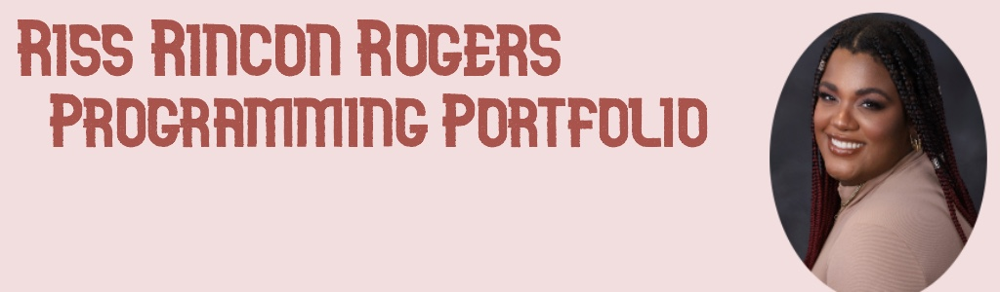

Welcome to my Page!
 .png) |
.png) |
.png) |

|
This will be my virtual computer science portfolio which I hope is informative on my development as a computer science. I am taking CSC 106 with Professor Fay-Wolfe my freshman year Fall 2022 semester.